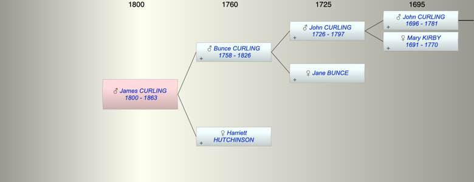

| [Index] |
| James Bunce CURLING (1800 - 1863) |
|  |
| b. 29 Sep 1800 at London |
| d. 1863 at Thanet aged 63 |
| Parents: |
| Bunce CURLING (1758 - 1826) |
| Harriett HUTCHINSON |
| Siblings (1): |
| Henry CURLING |
| Events in James Bunce CURLING (1800 - 1863)'s life | |||||
| Date | Age | Event | Place | Notes | Src |
| 29 Sep 1800 | James Bunce CURLING was born | London | Note 1 | ||
| 1826 | 26 | Death of father Bunce CURLING (aged 68) | buried 7 JUl 1826 Ham ex FS | ||
| 1863 | 63 | James Bunce CURLING died | Thanet | ||
| Note 1: bap 12 Dec 1800 Old Church St Pancras ex FS |
| Created on a Mac™ using iFamily for Mac™ on 8 Oct 2023 |